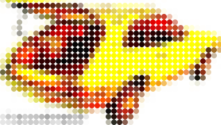
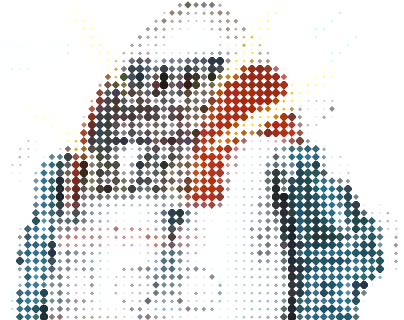

VB5 Bitmap Quantiser (143K)
VB5 Bitmap Quantiser (143K)
 VB6 Bitmap Quantiser (135K)
VB6 Bitmap Quantiser (135K)
 16 Apr 2004
16 Apr 2004
First Posted
 Subclassing Without The Crashes
Subclassing Without The Crashes
 Hue Luminance and Saturation (HLS) Model and Manipulating Colours
Hue Luminance and Saturation (HLS) Model and Manipulating Colours

Quantising Bitmaps
This sample was inspired by a T-Shirt I bought which used circles of various sizes to represent the intensity level of a blown-up image. The image is easy to see at a distance but not so straightforward close-up (which is handy, as I'm no oil-painting close-up). The code demonstrates averaging the pixels in an image and then creating a new image with one which uses an image from a strip which corresponds to the intensity at that point, optionally setting the colour to match the original.
About the Demonstration
The main demonstration screen is split into three parts:
- The image strip source to use for the different intensities.
- Source image.
- Result image.
The image strip source is used to represent the different intensities in the result image. You can select the number of images in the strip (the image at the left-hand edge should be the darkest and the one at the rightmost edge the lightest). This image can be scaled (using alpha resampling) and you so you can also specify the transparent colour, which is normally picked automatically from the top-right corner. Ideally the image strip source should be a much larger bitmap than needed, and scaled down to get a smooth effect.
Once a source image is loaded you can then create a quantised output. The options here are:
- Set the number of pixels sampled for each block. The less pixels sampled, the larger the result.
- Whether to apply the averaged colour from the source image to the destination.
- Whether to use the luminance of the image selected from the quantise image strip to the result. This is used if your image strip is not just a black and white image.
- The background colour to use when saving the image to a standard bitmap (you can also save it as a bitmap with an alpha channel, but not all applications are capable of reading these files).
Some examples of the output are as follows:
Quantised vbAccelerator Logo.
Robot
About the Code
The quantising code is mostly applied by the cDibQuantiser class. Ignoring the code to set up the quantise image, source and result, all of the work is performed in the pQuantise method. The code runs through a few steps:
- Converts the memory for the quantise image, source and result DIBs into arrays: bDibStrip, bDib and bDibTo respectively.
- Loops through the source image DIB, averaging the red, green, blue and gray components (gray is derived using the ITU formula (222 * Red + 707 * Green + 71 Blue)/1000). The code as it stands assumes that any pixels outside the image have a colour of black: this is not always appropriate and you could extend it to assume that the edge colour extends off the edge of the image.
- The average colour is then used to pick the correct image from the quantise strip, and the bits of the quantise image are then copied to the output, adjusting the colours and luminance if needed.
Conclusion
This article demonstrates applying quantising effects to images. The code here can also be used to create other effects such as mosaics.